UMN TTE
Basic transthoracic echocardiography education app with 3,000+ installs in 80+ countries.
Why the Echo Simulator
Most training tools isolate anatomy, ultrasound, or electrophysiology. Echo Simulator integrates them into a single real-time system—allowing users to understand how structure, function, and electrical activity interact.
The Echo Simulator builds on years of cardiac simulation development, including work with the University of Minnesota Visible Heart Laboratories and within the University of Minnesota Cardiothoracic Anesthesiology department, with additional collaboration in cardiology. It represents the evolution of that work into a fully integrated, independently developed platform—bringing echocardiography, cardiac anatomy, physiology, and electrophysiology together into a single real-time system.
Basic transthoracic echocardiography education app with 3,000+ installs in 80+ countries.

Basic transesophageal echocardiography education app with 6,000+ installs in 130+ countries.
Peer-Reviewed Publications
Echo Simulator is not positioned as a concept or mockup. It is the commercial evolution of published work in high-fidelity echocardiography and electrophysiology training using real human cardiac models, interactive 3D systems, and immersive simulation design.
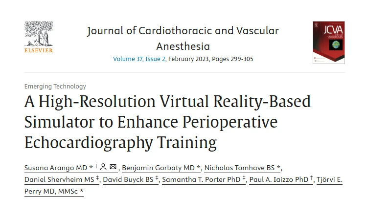
Demonstrates a realistic VR-based TEE and TTE training system built from high-resolution human heart scans, designed to improve spatial understanding while reducing the cost and access barriers of traditional simulator systems.
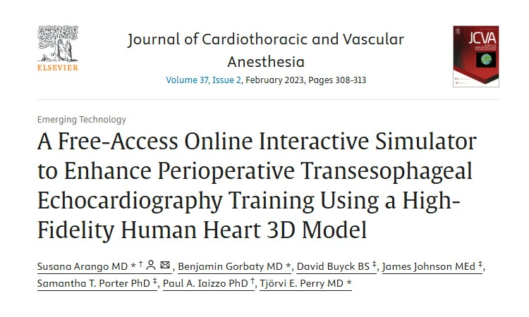
Shows development of an accessible interactive TEE simulator using a high-fidelity human heart model, supporting scalable education beyond large academic centers and reinforcing the practical training value of detailed digital cardiac anatomy.
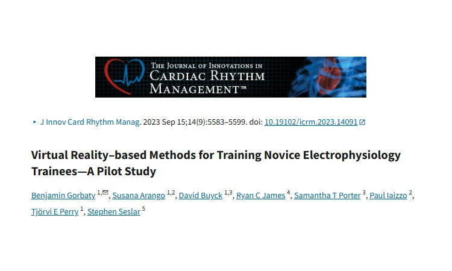
Extends the work into electrophysiology training, showing how immersive shared 3D environments can support spatial understanding of cardiac anatomy for EP learners and strengthen the broader educational foundation behind Echo Simulator.
Together, these publications help show that Echo Simulator is grounded in real academic development, real cardiac data, and real training use cases. For physicians, educators, and institutions, that means a platform built from demonstrated work rather than generic medical visualization.
Echo Training
Develop a clinically relevant understanding of transthoracic echocardiography by connecting probe position, cardiac anatomy, and image interpretation in real time.
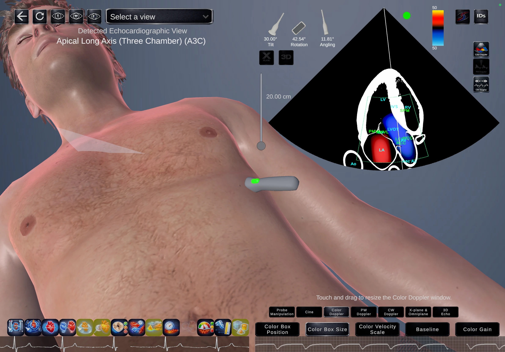
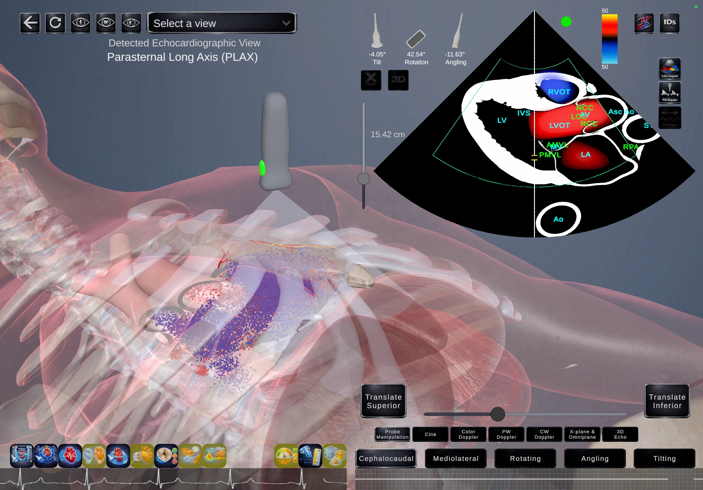
Echo Training
Train transesophageal echocardiography with spatial awareness of probe manipulation, cardiac structures, and imaging planes—bridging conceptual knowledge with procedural understanding.
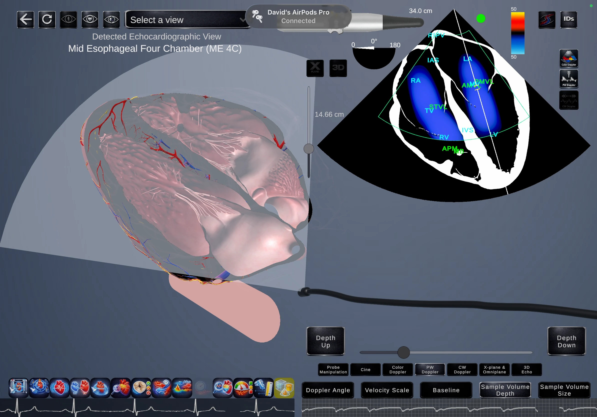
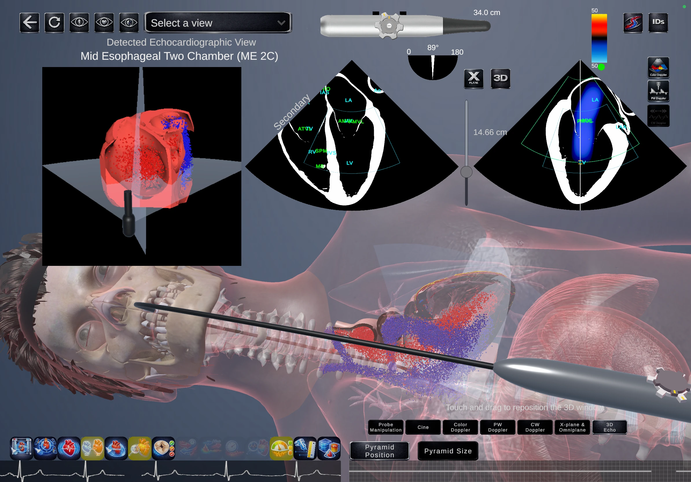
Echo Training
Understand intracardiac echocardiography from a procedural perspective, including catheter-based imaging, spatial orientation, and real clinical use cases.
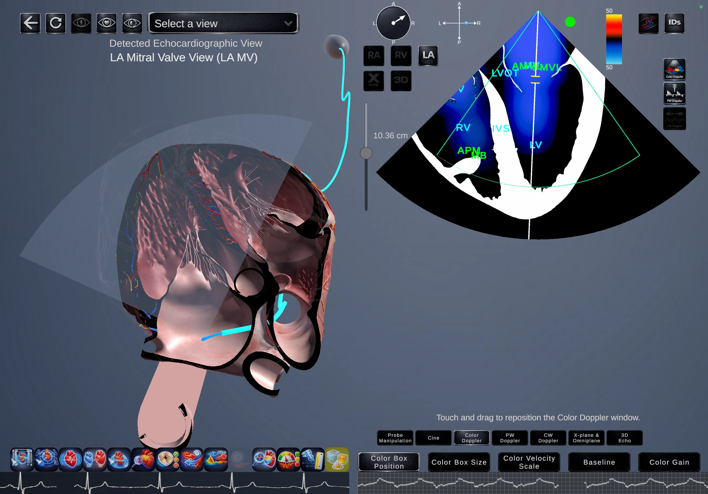
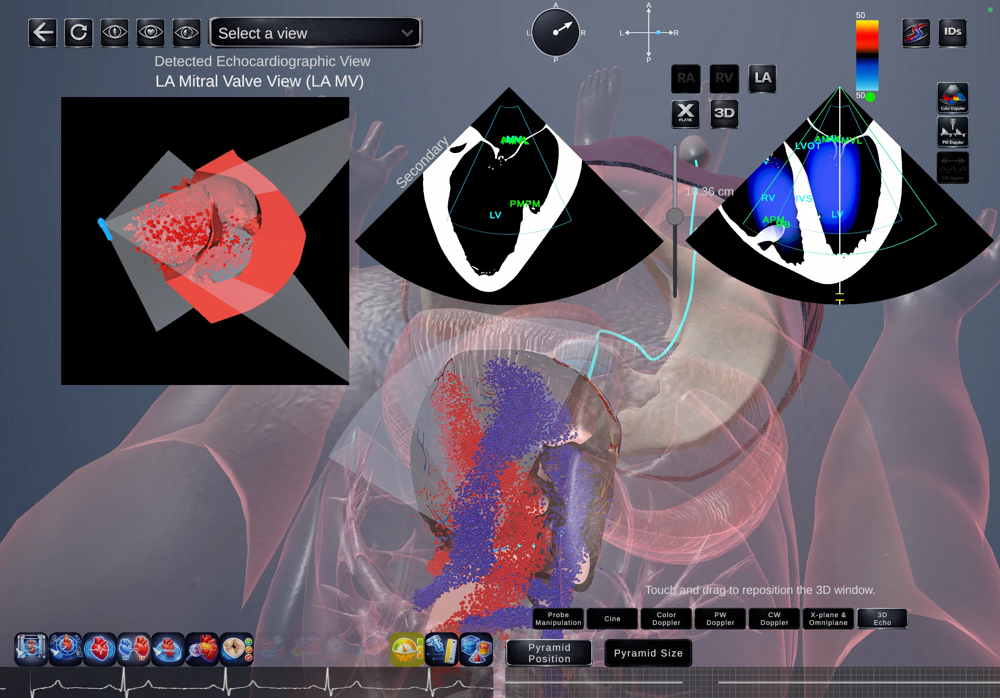
Cardiac Education
Interact with high-resolution cardiac anatomy in 3D, including chambers, valves, coronary structures, and spatial relationships essential for imaging and intervention.
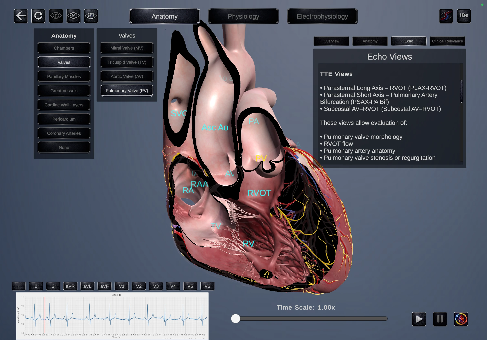
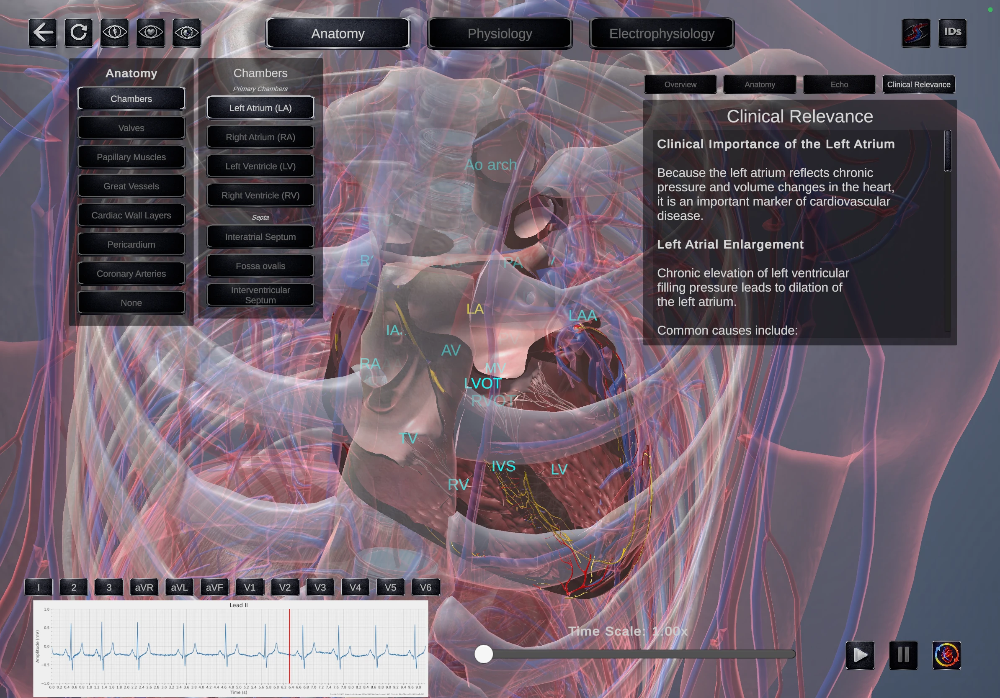
Cardiac Education
Understand dynamic cardiac function through synchronized visualization of motion, flow, pressure, and timing—bridging physiology with imaging and clinical interpretation.
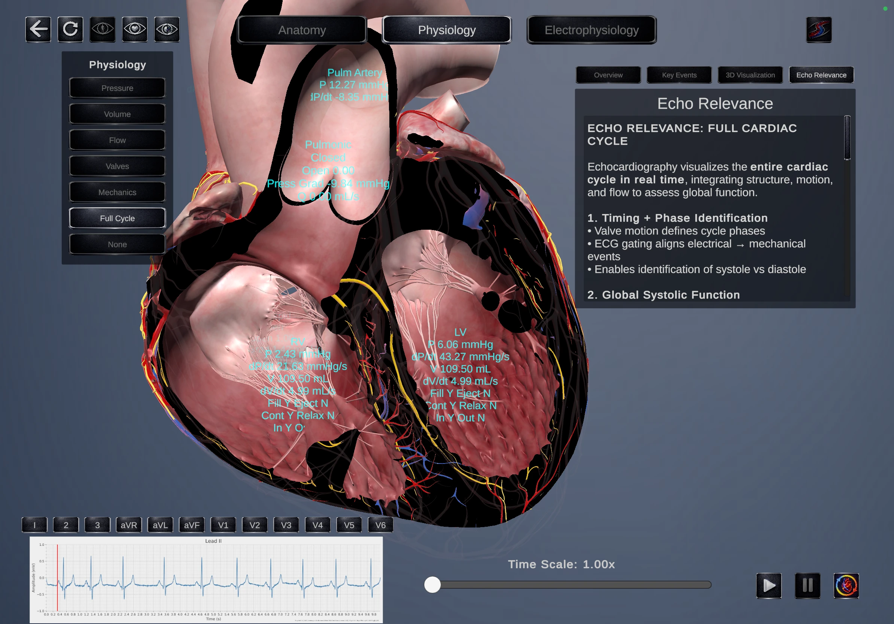
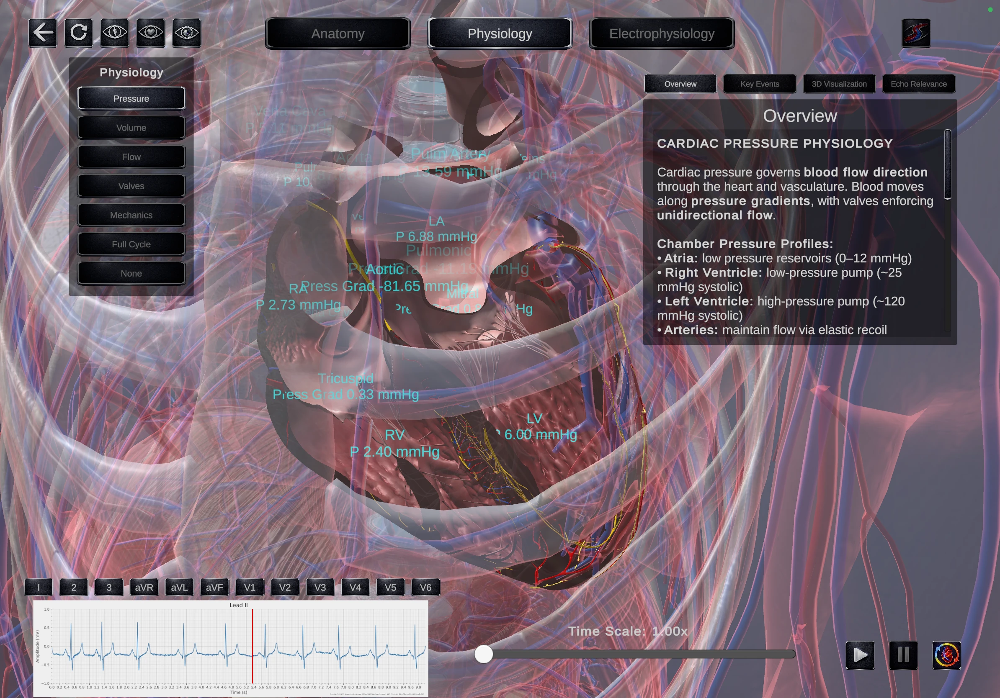
Cardiac Education
Visualize cardiac conduction, activation patterns, and ECG relationships in real time, enabling a deeper understanding of electrical behavior and its clinical implications.
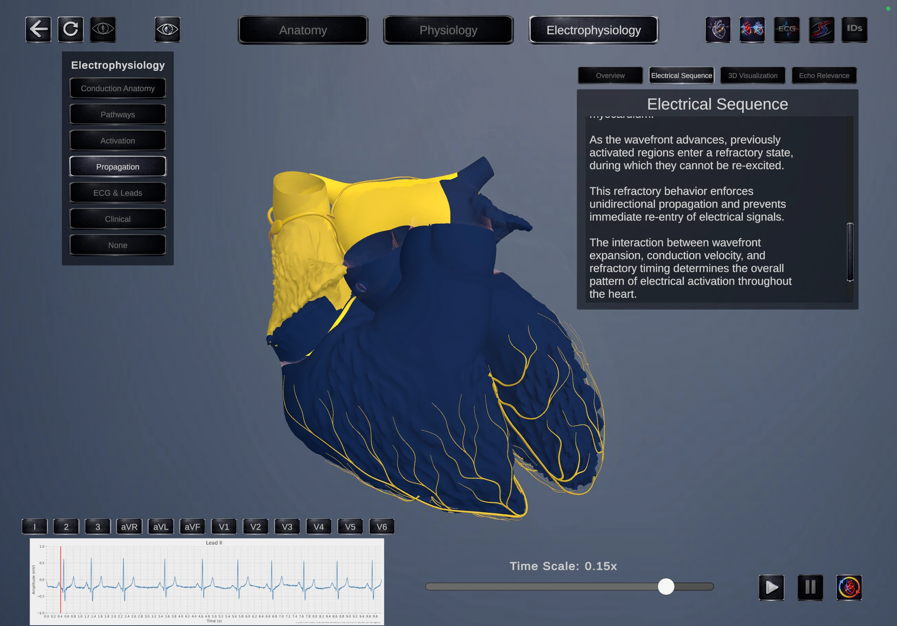
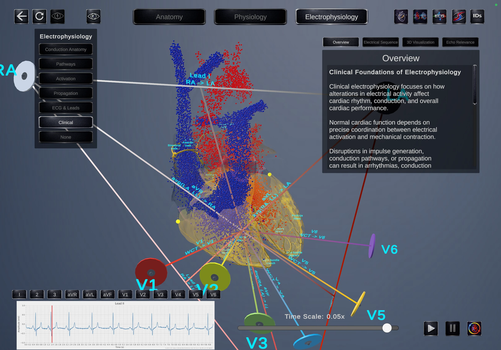
Privacy & Security
Echo Simulator is built for environments where privacy is critical. No user data is collected, stored, or transmitted. The platform operates entirely locally, with no reliance on internet connectivity—making it suitable for clinical, academic, and secure institutional use.
For transparency, we encourage you to read the full privacy policy so you can buy with confidence.
Effective Date: January 1, 2026
This privacy policy applies to the Echo Simulator application developed by AstrumArc LLC.
Echo Simulator does not collect, store, transmit, or share personal data or personally identifiable information.
Because no personal data is collected, no user data is used for analytics, advertising, profiling, tracking, or external processing.
Echo Simulator does not use third-party analytics services, advertising SDKs, tracking technologies, or external data collection services within the app.
Echo Simulator does not require internet access or wireless connectivity during normal use. Core functionality runs locally on the device.
Echo Simulator does not upload user data to external servers or cloud services. Any app content required for use is stored locally on the device.
Since Echo Simulator does not collect or retain personal data, there is no personal data to access, correct, export, or delete. If you have privacy questions or concerns, you may contact us directly.
Echo Simulator does not knowingly collect personal information from children or any other users.
If this privacy policy is updated in the future, the revised version will be posted with an updated effective date.
AstrumArc LLC
Email: david@astrumarc.com
Get Started with Echo Simulator Today